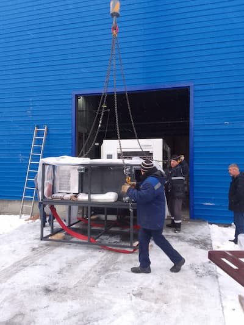
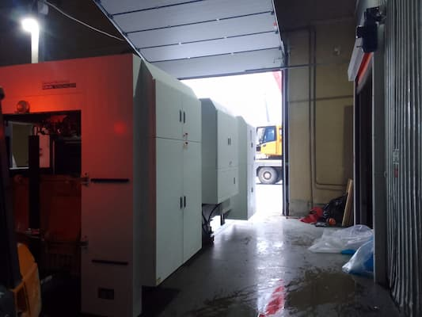
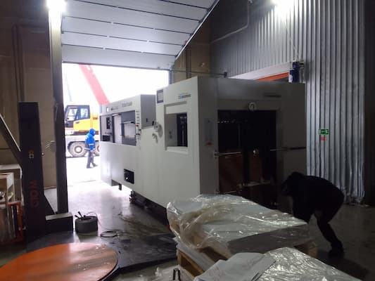
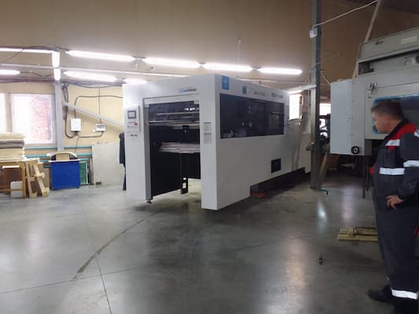
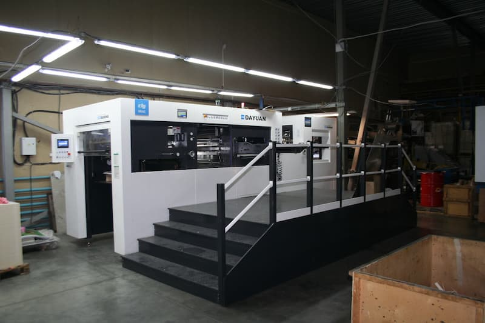
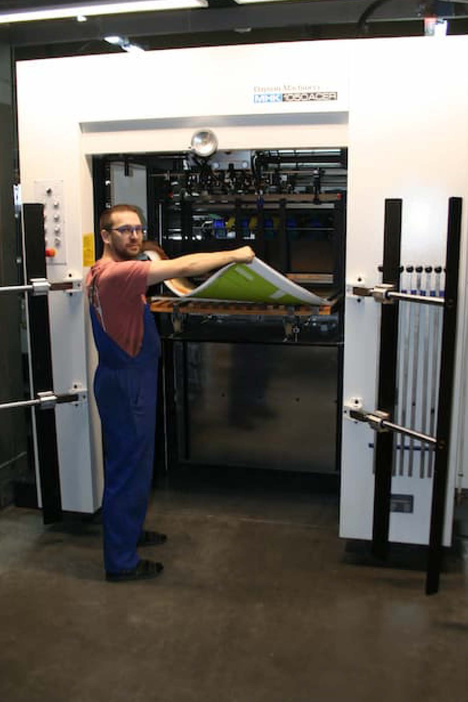
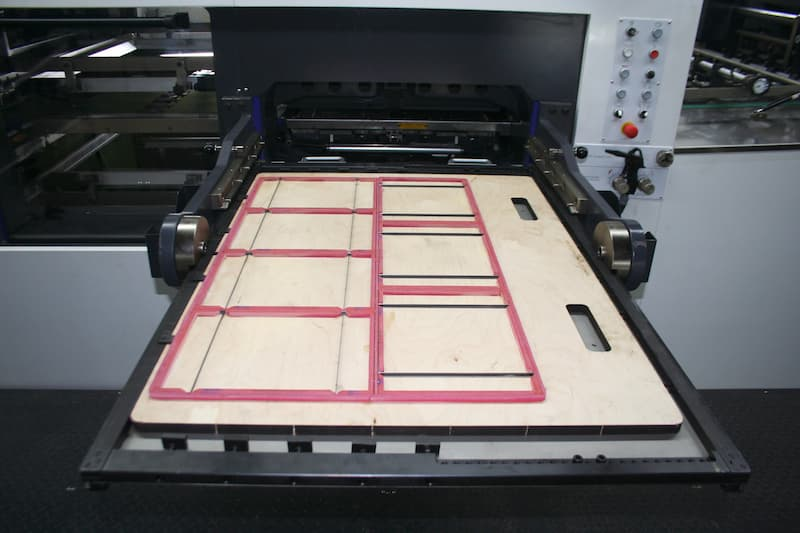
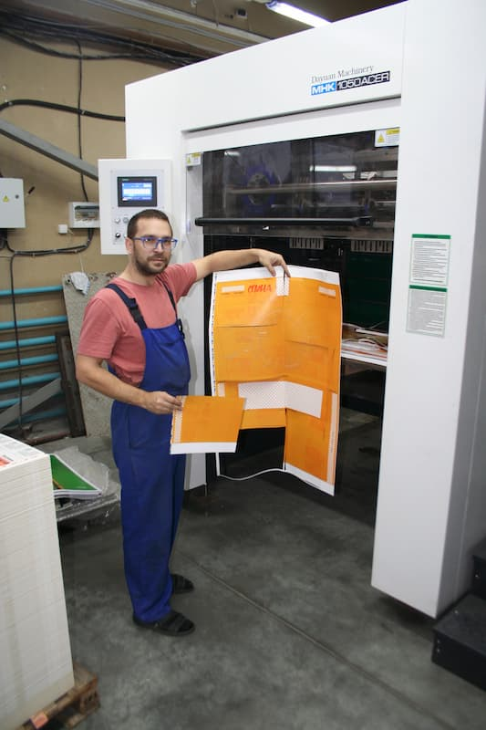

В типографию пришел и уже запущен новый «Автоматический пресс для плоской высечки MHK-1050»
«Свершилось!!! В типографию Лазурь пришел и уже запущен новый «Автоматический пресс для плоской высечки MHK-1050». Это значительное событие, которое открывает новые горизонты в производстве упаковки. Данный пресс используется, главным образом, для высокопрецизионной высечки и конгрева коробок из картона толщиной от 0,1 до 2 мм, полиэтилена от 0,2 до 1,5 мм, а также для высечки гофрированной бумаги толщиной менее 4 мм.

С появлением этого оборудования мы можем предложить нашим заказчикам люксовую упаковку в больших объемах, что является важным шагом к расширению возможностей нашей типографии. Для небольших тиражей мы по-прежнему применяем тигель для тиснения и конгрева, однако теперь у нас есть возможность обеспечить более высокую производительность и качество.

Автоматический пресс MHK-1050 выделяется на фоне аналогичного оборудования благодаря своей высокой скорости работы и безопасности, что делает его идеальным выбором для современных производственных процессов. Он обеспечивает стабильную подачу, высечку и транспортировку тонкой бумаги массой более 80 г, что значительно упрощает работу операторов и повышает общую эффективность.

Среди множества преимуществ данного пресс-оборудования можно отметить наличие 8 присосок и 8 транспортировочных устройств, которые обеспечивают более плавную работу устройства подачи. Полностью автоматизированное устройство непрерывной подачи и тележка для предварительной укладки способствуют повышению производительности и уменьшению времени на подготовку материалов.

Также стоит выделить возможность интеграции самофиксирующейся конструкции для опорной рамы высечного штампа, что гарантирует высокую безопасность и удобство эксплуатации. Повышение и понижение давления высечки отображается на электронном цифровом дисплее с точностью 0,001 мм, что позволяет достичь высочайшей точности в работе и обеспечивает дополнительный комфорт для операторов.

Максимальные размеры бумаги, которые можно обрабатывать на данном прессе, составляют 1050 мм × 750 мм, с минимальными размерами 400 мм × 360 мм. Толщина бумаги может варьироваться от 0,08 до 2 мм, а максимальная скорость работы достигает 7000 листов в час, с возможностью снижения скорости для тонкой бумаги и гофрированной бумаги в диапазоне от 0,08 до 0,15 мм в зависимости от покрытия и гладкости.

С приходом нового оборудования в типографию Лазурь мы не только расширяем ассортимент упаковки, но и поднимаем стандарты качества и производительности на новый уровень. Мы готовы предложить нашим клиентам еще более качественную и разнообразную упаковку, которая будет соответствовать самым высоким требованиям рынка. Ваша упаковка — это наша гордость!»



Множество преимуществ:
- Обеспечивает стабильную подачу, высечку и транспортировку тонкой бумаги массой >80 г;
- 8 присосок и 8 транспортировочных устройств обеспечивают более плавную работу устройства подачи;
- Полностью автоматизированное устройство непрерывной подачи и тележка для предварительной укладки для повышения производительности;
- Возможность интегрирования самофиксирующейся конструкции для опорной рамы высечного штампа, обеспечивая высокую безопасность и удобство эксплуатации;
- Повышение и понижение давления высечки отображается на электронном цифровом дисплее с точностью 0,001 мм для обеспечения высокой точности и удобства эксплуатации.
- Имеет привлекательный внешний вид и соответствует международному передовому уровню.
- «Быстрое обслуживание в меньшем объеме»: Более низкая частота отказов позволяет минимизировать объем сервисного обслуживания.
-
Механические и технические характеристики
Модель MHK-1050 Макс. размер бумаги 1050 мм × 750 мм Мин. размер бумаги 400 мм × 360 мм Толщина бумаги 0,08-2 мм Макс. скорость 7000 листов /ч Макс. размер высечки 1040 мм × 720 мм Мин. размер торца захвата 9-17 мм Макс. давление 300 т